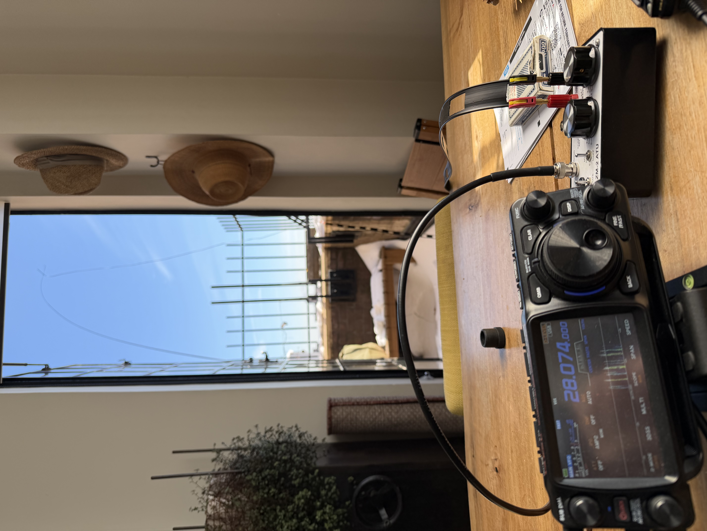
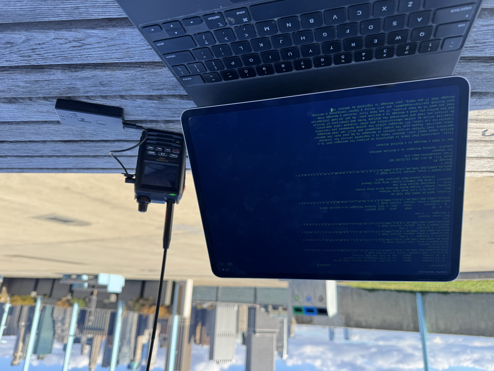

W2ASM
Brooklyn, NY ·
FN30AQ
Station
Yaesu
FTX-1
or
FT-891
at ≤ 100W
Magloop, EFHWs and dipoles
Active on
POTA
Recent activity on
PSKReporter
Projects
Amateur Digital
— iOS app for digital modes
Amateur Radio Beacon
— iOS beacon app
Hops
— Meshtastic bot
On the Air
APRS and Winlink
🪰 W2ASM-1 on Meshtastic
Member of
N2YCR
w2asm
at
arrl.net

